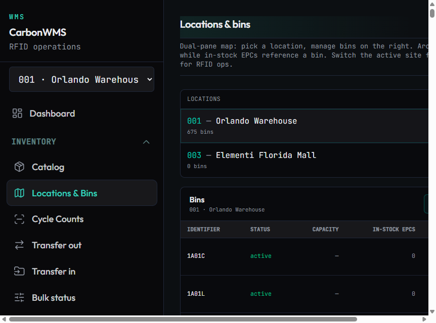
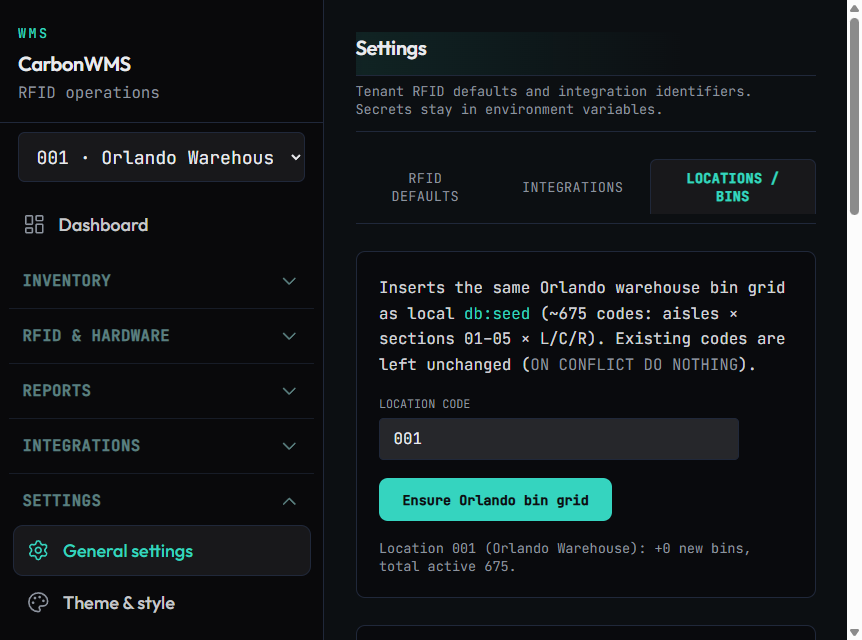

Status: SUCCESS
/infrastructure/settings while authenticated (existing session in MCP browser).
ON CONFLICT DO NOTHING behavior.
/overview/locations: left pane lists 001 — Orlando Warehouse · 675 bins;
right pane shows bin table (scrollable; first rows e.g. 1A01C, 1A01L).

/overview/locations — Orlando shows 675 bins; bin grid visible in table.

/infrastructure/settings — Locations / bins tab after second ensure;
message +0 new bins, total active 675.
Same operation as UI: POST /api/settings/ensure-orlando-bins with optional body
{ "locationCode": "001" } — requires admin scope.
npm run db:ensure-orlando-bins:coolify or
npm run db:ensure-orlando-bins:coolify:tunnel — see repo scripts.